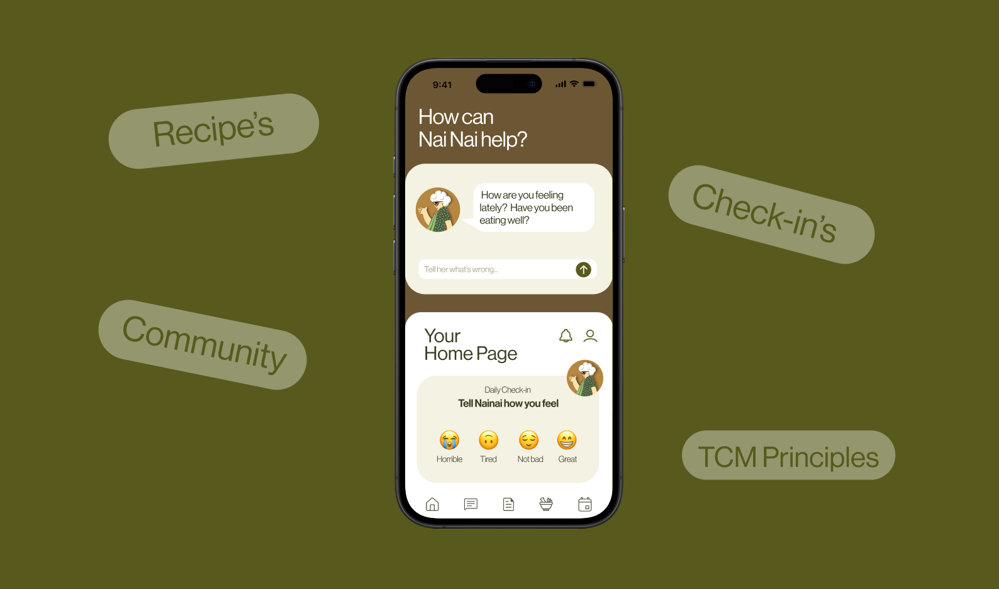
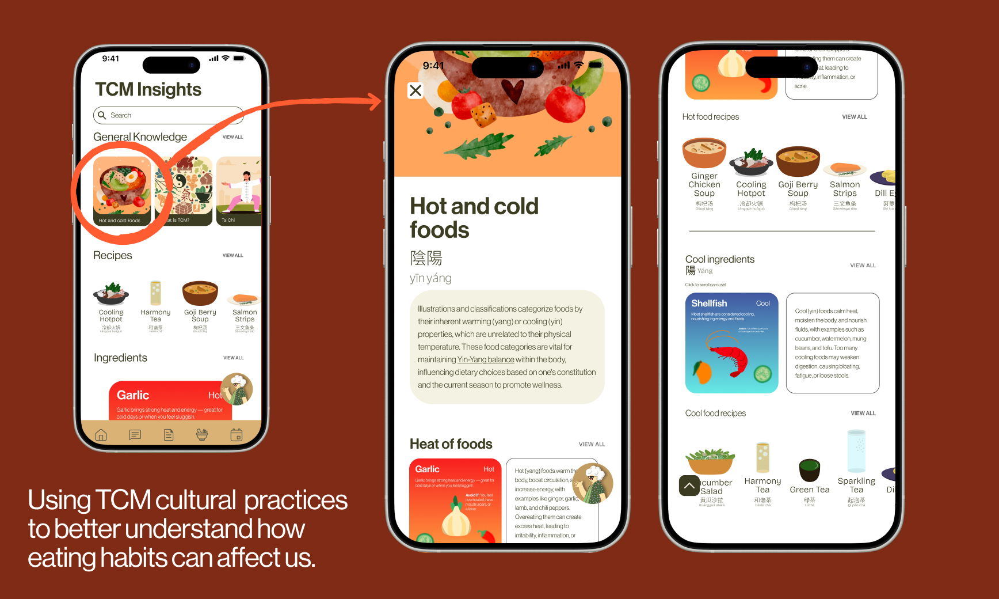
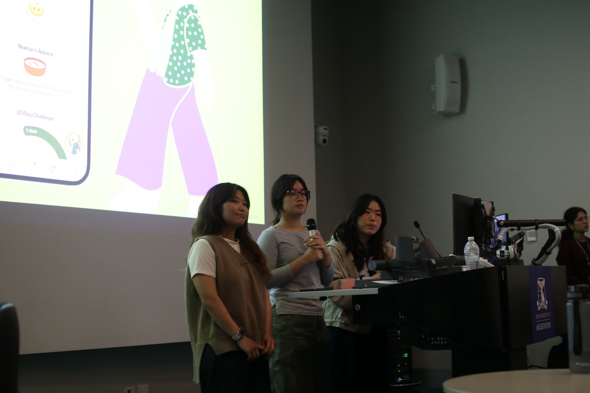

CISSA Hackathon · 2026
Nai Nai

- Role
- Lead UI
UX Research - Timeline
- February 2026
- Built for
- CISSA Hackathon
Medical track - Tools
- Figma
Illustrator · Photoshop
Challenge
Rural Australians are being left behind.
Medicine becomes inaccessible, especially in remote areas where transport is difficult.
Problem
Medication can be inaccessible, however there's a trust gap between Western audiences and Eastern medication.
Clinical evidence is hard to find in English and herbal safety worries persist. A directory of vetted strangers doesn't close that gap, so people just power through.
I take a Panadol and avoid coffee.
How might we bring trusted TCM advice to remote users, while rebuilding trust in a shrinking profession?
Solution
Have you spoken to grandma yet?
The trust gap was emotional, not just clinical. So instead of another clinical app, we built a person: Nai Nai (奶奶), Mandarin for grandmother.
Daily check-in → real remedy
A one-tap mood check-in leads straight to a specific, doable home remedy.
TCM Insights
Vetted recipes, plain-language articles and a hot/cold ingredient guide.

Community + Ask Nai Nai
Swap remedies with users and practitioners, or chat with Nai Nai between check-ins.
Outcome
1st place in CISSA's Medical track.
Nai Nai won by treating trust, not information, as the real problem. It's still a concept, so the next step is testing with real TCM practitioners and a proper safety review.
